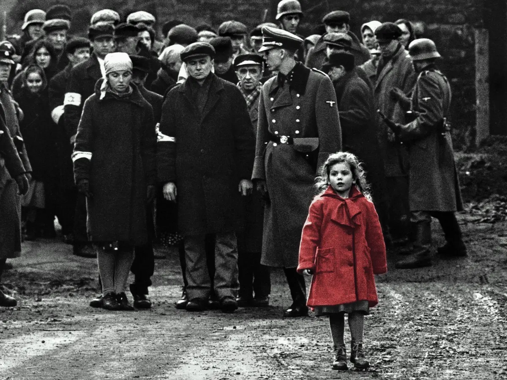

Oskar Schindler would have been an easier man to understand if he'd been a conventional hero,fighting for his beliefs. The fact that he was flawed - a drinker, a gambler, a womanizer, driven by greed and a lust for high living - makes his life an enigma.
Here is a man who saw his chance at the beginning of World War II and moved to Nazi -occupied Poland to open a factory and employ Jews at starvation wages. His goal was to become a millionaire. By the end of the war, he had risked his life and spent his fortune to save those Jews and had defrauded the Nazis for months with a munitions factory that never produced a single usable shell.
Why did he change? What happened to turn him from a victimizer into a humanitarian? It is to the great credit of Steven Spielberg that his film "Schindler's List" does not even attempt to answer that question. Any possible answer would be too simple, an insult to the mystery of Schindler's life. The Holocaust was a vast evil engine set whirling by racism and madness. Schindler outsmarted it, in his own little corner of the war, but he seems to have had no plan, to have improvised out of impulses that remained unclear even to himself. In this movie, the best he has ever made, Spielberg treats the fact of the Holocaust and the miracle of Schindler's feat without the easy formulas of fiction.
The movie is 184 minutes long, and like all great movies, it seems too short. It begins with Schindler (Liam Neeson), a tall, strong man with an intimidating physical presence. He dresses expensively and frequents nightclubs, buying caviar and champagne for Nazi officers and their girls, and he likes to get his picture taken with the top brass. He wears a Nazi party emblem proudly in his buttonhole. He has impeccable black market contacts, and he's able to find nylons, cigarettes, brandy: He is the right man to know. The authorities are happy to help him open a factory to build enameled cooking utensils that army kitchens can use. He is happy to hire Jews because their wages are lower, and Schindler will get richer that way.
Schindler's genius is in bribing, scheming, conning. He knows nothing about running a factory and finds Itzhak Stern (Ben Kingsley), a Jewish accountant, to handle that side of things. Stern moves through the streets of Krakow, hiring Jews for Schindler.
Because the factory is a protected war industry, a job there may guarantee longer life.
The relationship between Schindler and Stern is developed by Spielberg with enormous subtlety. At the beginning of the war, Schindler wants only to make money, and at the end he wants only to save "his" Jews. We know that Stern understands this. But there is no moment when Schindler and Stern bluntly state what is happening, perhaps because to say certain things aloud could result in death.
This subtlety is Spielberg's strength all through the film. His screenplay, by Steven Zaillian, based on the novel by Thomas Keneally, isn't based on contrived melodrama. Instead, Spielberg relies on a series of incidents, seen clearly and without artificial manipulation, and by witnessing those incidents we understand what little can be known about Schindler and his scheme.
We also see the Holocaust in a vivid and terrible way. Spielberg gives us a Nazi prison camp commandant named Goeth (Ralph Fiennes) who is a study in the stupidity of evil. From the veran da of his "villa," overlooking the prison yard, he shoots Jews for target practice. (Schindler is able to talk him out of this custom with an appeal to his vanity so obvious it is almost an insult.) Goeth is one of those weak hypocrites who upholds an ideal but makes himself an exception to it; he preaches the death of the Jews, and then chooses a pretty one named Helen Hirsch (Embeth Davidtz) to be his maid and falls in love with her. He does not find it monstrous that her people are being exterminated, and she is spared on his affectionate whim. He sees his personal needs as more important than right or wrong, life or death. Studying him, we realize that Nazism depended on people able to think like Jeffrey Dahmer.
Shooting in black and white on many of the actual locations of the events in the story (including Schindler's original factory and even the gates of Auschwitz), Spielberg shows Schindler dealing with the madness of the Nazi system. He bribes, he wheedles, he bluffs, he escapes discovery by the skin of his teeth. In the movie's most audacious sequence, when a trainload of his employees is mistakenly routed to Auschwitz, he walks into the death camp himself and brazenly talks the authorities out of their victims, snatching them from death and putting them back on the train to his factory.
XWhat is most amazing about this film is how completely Spielberg serves his story. The movie is brilliantly acted, written, directed and seen. Individual scenes are masterpieces of art direction, cinematography, special effects, crowd control. Yet Spielberg, the stylist whose films often have gloried in shots we are intended to notice and remember, disappears into his work. Neeson, Kingsley and the other actors are devoid of acting flourishes. There is a single-mindedness to the enterprise that is awesome.
At the end of the film, there is a sequence of overwhelming emotional impact, involving the actual people who were saved by Schindler. We learn that "Schindler's Jews" and their descendants today number about 6,000 and that the Jewish population of Poland is 4,000. The obvious lesson would seem to be that Schindler did more than a whole nation to spare its Jews. That would be too simple. The film's message is that one man did something, while in the face of the Holocaust others were paralyzed. Perhaps it took a Schindler, enigmatic and reckless, without a plan, heedless of risk, a con man, to do what he did. No rational man with a sensible plan would have gotten as far.
The French author Flaubert once wrote that he disliked Uncle Tom's Cabin because the author was constantly preaching against slavery. "Does one have to make observations about slavery?" he asked. "Depict it; that's enough." And then he added, "An author in his book must be like God in the universe, present everywhere and visible nowhere." That would describe Spielberg, the author of this film. He depicts the evil of the Holocaust, and he tells an incredible story of how it was robbed of some of its intended victims. He does so without the tricks of his trade, the directorial and dramatic contrivances that would inspire the usual melodramatic payoffs. Spielberg is not visible in this film. But his restraint and passion are present in every shot.